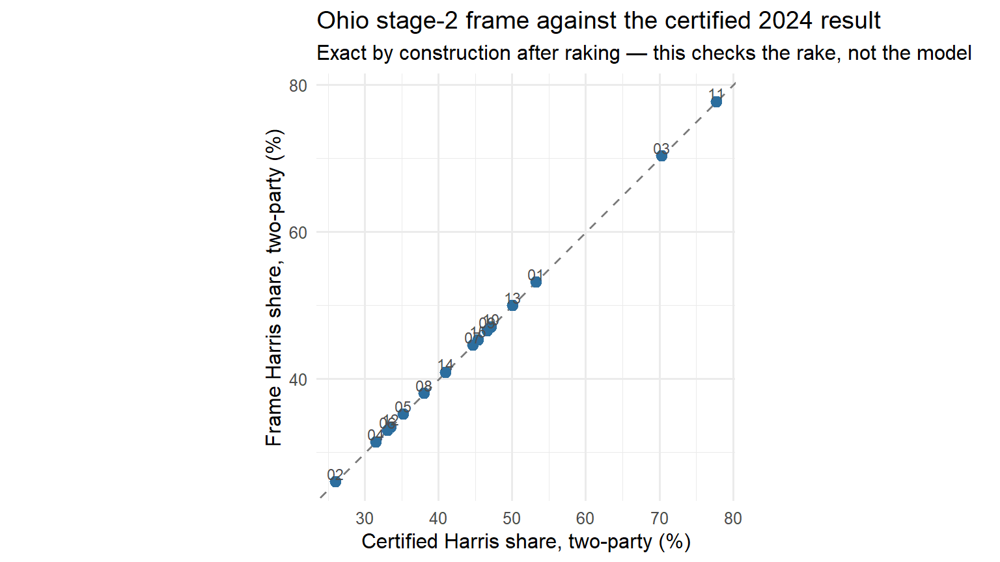

library(arrow)
library(data.table)
library(ggplot2)
DATA <- file.path("..", "data")
set.seed(20261013L) # every draw in this notebook is seeded and reproducibleNotebook 1 — Building a silicon sample
LLMSS 2026, Workshop 1 (AIPOP) · Hong Kong, 13 October 2026
What you will do
A digital twin is not a random person. It is a slot in a measured population frame, filled by a record and then given attitudes by a matched survey respondent. This notebook builds the frame and fills 400 of those slots for Ohio, then audits what you drew.
By the end you will have:
- read a stage-1 frame — who lives in each Ohio district, from the ACS;
- read a stage-2 frame — how each of those cells voted in November 2024;
- checked the frame against the certified 2024 result;
- collapsed it to a teaching mini-frame;
- drawn 400 synthetic skeletons by probability-proportional-to-size sampling;
- audited the drawn margins, and raked them to the acceptance standard.
Nothing here calls a language model. That is the point: the composition of a panel is fixed by census and certified-result data before any model is involved. The model never chooses who is in the panel.
A note on what you are drawing. There are two routes to a skeleton. The stronger one starts from a state voter file: the official list of registered voters, with each person’s county, registration and turnout history. Ohio publishes one, and the Talking to Machines panel draws real registrants from it into these cells. Working with a voter file requires a licence and ethical care, because every row is a real, identifiable person. This notebook takes the other route: it draws synthetic skeletons directly from the census frame. Section 7 shows what the registrant route adds.
How to read this notebook. Every table and figure the code prints has a number (Table 1.1, Figure 1.1, …), given in bold just above the code that prints it. When the text quotes a number, it says which table it comes from, and which row or column to look at.
The first block loads the three R packages the notebook uses and fixes the random seed, so everyone draws the same panel.
1. Stage 1 — who lives here
Stage 1 is the American Community Survey (ACS) 2019–2023 five-year PUMS: the individual responses behind the ACS, for adults 18+, allocated from their PUMA (the smallest area the ACS publishes) to congressional districts.
The block below loads it as a table called sf1, prints its size (rows, columns), and prints its first three rows.
Table 1.1. sf1, the stage-1 frame: size, then the first three rows.
sf1 <- as.data.table(read_parquet(file.path(DATA, "SF_OH.parquet")))
dim(sf1)[1] 23798 12head(sf1, 3)| state | CD119 | gender | ethnicity | age_bins | marital_status | college_grad | hh_income | internet | citizen | N | n_pums |
|---|---|---|---|---|---|---|---|---|---|---|---|
| OH | 07 | F | White | 65+ | Not Married | Does not have a College Degree | [min, 25000) | Has access to the internet | 1 | 9950 | 640 |
| OH | 04 | F | White | 25-34 | Not Married | Does not have a College Degree | [min, 25000) | Has access to the internet | 1 | 2973 | 141 |
| OH | 11 | M | White | 35-44 | Not Married | Has a College Degree | [min, 25000) | Has access to the internet | 1 | 390 | 30 |
Each row of Table 1.1 is a cell: one combination of district (CD119), sex, ethnicity, age band, marital status, degree, household income, internet access and citizenship. The line above the table gives the size: 23,798 cells and 12 columns. The last two columns are the ones that matter:
n_pumsis how many ACS respondents fall in the cell (640 in the first row);Nis how many Ohio adults those respondents stand for (9,950 in the first row). Each respondent carries a person weight, the number of people they represent, andNis the sum of those weights.
The ACS is a sample, but the Census Bureau calibrates its person weights to independent population controls. So adding up N reproduces the ACS’s own published estimates for Ohio directly, without raking afterwards. They are estimates, with sampling error, not a census count.
The next block adds up N over all cells, and over citizens only (citizen == 1).
Table 1.2. sf1 summed: number of cells, adults, and citizen adults.
sf1[, .(cells = .N,
adults = format(sum(N), big.mark = ","),
citizen_adults = format(sum(N[citizen == 1]), big.mark = ","))]| cells | adults | citizen_adults |
|---|---|---|
| 23798 | 9,170,227 | 8,931,251 |
Table 1.2 shows 9,170,227 adults, of whom 8,931,251 are citizens (column citizen_adults). Everything from stage 2 on uses the citizen adults, the people who can vote. The same 8,931,251 is the size of the frame Notebook 3 post-stratifies to.
Exercise 1.1. The frame carries every Ohio district. How many citizen adults does the frame put in OH-09, and what share of them hold a college degree? Write a block that keeps the citizen cells of district 09 in sf1 and sums their N.
# your code here2. Stage 2 — how those cells voted
Stage 1 says who lives in a district. Stage 2 says how each cell voted in November 2024, in four classes: Democratic, Republican, other, and stayed home.
It is a multinomial logit fitted in Stan over the CES 2024 vote-validated release, with the certified district result as an area predictor and hierarchical effects for sex, ethnicity, college, age, income, state and district. Model probabilities are then computed for every stage-1 cell and raked within each district so that D, R, other and stay-home totals equal the certified result.
You do not fit this model here. It was fitted once, and this notebook reads its result: SF_extended_OH.parquet, the stage-1 cells with the four vote classes attached.
The block below loads it as sf2 and prints its size and first three rows.
Table 1.3. sf2, the stage-2 frame: size, then the first three rows.
sf2 <- as.data.table(read_parquet(file.path(DATA, "SF_extended_OH.parquet")))
dim(sf2)[1] 9467 18head(sf2, 3)| state | area | TX26 | gender | ethnicity | college_grad | age_bins | hh_income | N | area_key | p_D | p_R | p_Other | p_stay home | N_D | N_R | N_Other | N_stay |
|---|---|---|---|---|---|---|---|---|---|---|---|---|---|---|---|---|---|
| OH | OH-01 | NA | M | White | Does not have a College Degree | 18-24 | [min, 25000) | 4832 | OH-01 | 0.1224127 | 0.6444133 | 0.0321832 | 0.2009908 | 77.64800 | 457.8466 | 19.116852 | 4277.389 |
| OH | OH-01 | NA | F | White | Does not have a College Degree | 18-24 | [min, 25000) | 5336 | OH-01 | 0.1166994 | 0.5565905 | 0.0337429 | 0.2929672 | 58.74093 | 313.8050 | 15.905172 | 4947.549 |
| OH | OH-01 | NA | F | White | Does not have a College Degree | 45-54 | [min, 25000) | 1242 | OH-01 | 0.3879578 | 0.5552714 | 0.0088293 | 0.0479415 | 183.44484 | 294.0886 | 3.909577 | 760.557 |
sf2 has 9,467 rows (the line above Table 1.3). It keeps citizens only, and drops marital status and internet access from the key, so it has fewer cells than sf1. The district is now in the column area (OH-01, …). N is still the number of citizen adults in the cell, and each row gains two sets of columns:
p_D,p_R,p_Other,p_stay home: the model’s probability that a person in this cell voted Democratic, Republican, other, or stayed home;N_D,N_R,N_Other,N_stay: how many of the cell’sNpeople fall in each class, after raking to the certified result.
In the first row of Table 1.3, 4,832 men aged 18–24 in OH-01 split into about 78 Democratic voters, 458 Republican, 19 other and 4,277 who stayed home.
The four counts split N between them, so they must add back up to it. The next block prints the largest gap between N_D + N_R + N_Other + N_stay and N across all 9,467 rows:
# the four counts should sum back to the cell size
sf2[, max(abs(N_D + N_R + N_Other + N_stay - N))][1] 7.275958e-11The answer is of the order of 0.0000000001: rounding, so the counts add up.
Exercise 2.1. Ohio’s turnout and two-party split, straight off the frame. Write a block that sums the columns of sf2 over the whole state: citizen adults, 2024 voters (N_D + N_R + N_Other), turnout, and Harris’s share of the two-party vote.
# your code here3. Does the frame know the answer? Check it against certified results
This is the first validation the project runs on every frame. After raking, district totals are exact by construction — so the honest check is whether the numbers you have match the certified results you were raked to, and whether the shape of the vote across districts is right.
The first block loads the certified 2024 presidential result by district as cert, and prints Harris’s two-party share for Ohio’s 15 districts.
Table 1.4. cert: the certified 2024 result. certified_harris_2p is Harris’s share of the two-party (Harris + Trump) vote; cvap is the district’s citizen voting-age population.
cert <- fread(file.path(DATA, "predictor_cd119_2024.csv"),
colClasses = list(character = "CD119"))[state == "OH"]
cert[, .(CD119, certified_harris_2p = 1 - pct_trump, cvap)][order(CD119)]| CD119 | certified_harris_2p | cvap |
|---|---|---|
| 01 | 0.5319971 | 582434 |
| 02 | 0.2602888 | 608007 |
| 03 | 0.7032872 | 563590 |
| 04 | 0.3145881 | 597139 |
| 05 | 0.3523275 | 605047 |
| 06 | 0.3303679 | 611341 |
| 07 | 0.4463461 | 607056 |
| 08 | 0.3804773 | 579017 |
| 09 | 0.4661307 | 598611 |
| 10 | 0.4710201 | 595475 |
| 11 | 0.7773096 | 589067 |
| 12 | 0.3349139 | 602482 |
| 13 | 0.5002336 | 605625 |
| 14 | 0.4095340 | 619946 |
| 15 | 0.4535597 | 566414 |
The next block computes the same share from the frame: for each district, the Democratic voters in sf2 over its Democratic plus Republican voters. It puts the two side by side in a table called cmp, with the difference in percentage points.
Table 1.5. cmp: frame against certified, by district. diff_pp is the frame minus the certified share, in points.
byCD <- sf2[, .(frame_harris_2p = sum(N_D) / sum(N_D + N_R)), by = .(CD119 = sub("OH-", "", area))]
cmp <- merge(byCD, cert[, .(CD119, certified_harris_2p = 1 - pct_trump)], by = "CD119")
cmp[, diff_pp := 100 * (frame_harris_2p - certified_harris_2p)]
cmp[order(CD119)]| CD119 | frame_harris_2p | certified_harris_2p | diff_pp |
|---|---|---|---|
| 01 | 0.5319972 | 0.5319971 | 9.50e-06 |
| 02 | 0.2602889 | 0.2602888 | 7.30e-06 |
| 03 | 0.7032873 | 0.7032872 | 7.00e-06 |
| 04 | 0.3145882 | 0.3145881 | 1.16e-05 |
| 05 | 0.3523276 | 0.3523275 | 5.80e-06 |
| 06 | 0.3303679 | 0.3303679 | 2.60e-06 |
| 07 | 0.4463462 | 0.4463461 | 8.20e-06 |
| 08 | 0.3804774 | 0.3804773 | 8.90e-06 |
| 09 | 0.4661308 | 0.4661307 | 9.10e-06 |
| 10 | 0.4710202 | 0.4710201 | 6.50e-06 |
| 11 | 0.7773097 | 0.7773096 | 5.20e-06 |
| 12 | 0.3349140 | 0.3349139 | 5.30e-06 |
| 13 | 0.5002337 | 0.5002336 | 1.34e-05 |
| 14 | 0.4095341 | 0.4095340 | 9.00e-06 |
| 15 | 0.4535598 | 0.4535597 | 9.50e-06 |
Every value in the diff_pp column of Table 1.5 is about 0.00001 points: the frame reproduces the certified result exactly. The last block plots the same two columns against each other, saves the plot to figures/, and shows it.
Figure 1.1. Frame against certified Harris share, one point per district.
p_frame <- ggplot(cmp, aes(100 * certified_harris_2p, 100 * frame_harris_2p)) +
geom_abline(slope = 1, intercept = 0, linetype = "dashed", colour = "grey50") +
geom_point(size = 2.6, colour = "#2c6e9e") +
geom_text(aes(label = CD119), nudge_y = 1.1, size = 3, colour = "grey30") +
labs(x = "Certified Harris share, two-party (%)",
y = "Frame Harris share, two-party (%)",
title = "Ohio stage-2 frame against the certified 2024 result",
subtitle = "Exact by construction after raking — this checks the rake, not the model") +
coord_equal() + theme_minimal(base_size = 12)
ggsave(file.path("..", "figures", "oh_frame_vs_certified.png"), p_frame,
width = 8, height = 5, dpi = 200)
p_frame
Discussion. Why is Figure 1.1 not evidence that the method works? What would be? (The answer: a held-out election — New Jersey, November 2025 — that appears nowhere in the pipeline. We come back to it in Notebook 3.)
4. The mini-frame
The project’s registrant draw uses district × county × sex × ethnicity × age as its cell key, with the vote class assigned inside each cell. County is not in the ACS frame — it enters only from the voter file, which splits each frame cell across counties by its own composition. Since you are drawing synthetically, your key is:
district × sex × ethnicity × age × college × vote2024The mini-frame is not a subset. It holds the same citizen adults as sf2, under a different key: the vote class moves from four count columns (N_D, N_R, N_Other, N_stay) into the key, and household income drops out. Same people, re-keyed.
Why can a synthetic draw not have county? The ACS does not publish it. The smallest geography in the PUMS is the PUMA, and PUMAs and counties do not nest: a rural PUMA combines several whole counties, and an urban county is split across several PUMAs. Placing a synthetic person in a county would mean inventing that joint distribution. A voter file records each registrant’s county directly.
This is worth pausing on. Leaving county out is a real defect. When the project’s panels were drawn without it, a county’s realised partisan composition was an uncontrolled by-product of the draw, and Passaic County, New Jersey came out 13.4 points too Democratic. Adding county to the cell key brought the state’s county error from 2.98 to 1.73 points. Your synthetic sample cannot have this control, and it is the clearest illustration of what a voter file buys you.
The block below builds the mini-frame as a table called mini. It turns each sf2 row into four rows, one per vote class, each with that class’s count as its N; drops the empty ones; adds up rows that now share the same key (which is where income disappears); and sorts them. It prints the number of cells and people, then the first five rows.
Table 1.6. mini, the mini-frame: size, then the first five cells.
mini <- melt(
sf2,
id.vars = c("area", "gender", "ethnicity", "age_bins", "college_grad"),
measure.vars = c("N_D", "N_R", "N_Other", "N_stay"),
variable.name = "vote2024", value.name = "N"
)
mini[, vote2024 := factor(vote2024, levels = c("N_D", "N_R", "N_Other", "N_stay"),
labels = c("D", "R", "Other", "stay"))]
mini <- mini[N > 0, .(N = sum(N)), by = .(cd = area, gender, ethnicity, age_bins,
college_grad, vote2024)]
setorder(mini, cd, vote2024, ethnicity, age_bins, gender)
cat(sprintf("%s cells, %s citizen adults\n",
format(nrow(mini), big.mark = ","), format(round(sum(mini$N)), big.mark = ",")))9,540 cells, 8,931,251 citizen adultshead(mini, 5)| cd | gender | ethnicity | age_bins | college_grad | vote2024 | N |
|---|---|---|---|---|---|---|
| OH-01 | F | Asian | 18-24 | Does not have a College Degree | D | 13.83218 |
| OH-01 | F | Asian | 18-24 | Has a College Degree | D | 19.69479 |
| OH-01 | M | Asian | 18-24 | Does not have a College Degree | D | 26.58007 |
| OH-01 | M | Asian | 18-24 | Has a College Degree | D | 18.21969 |
| OH-01 | F | Asian | 25-34 | Has a College Degree | D | 569.90428 |
The line above Table 1.6 confirms it: 9,540 cells holding the same 8,931,251 citizen adults as sf2. Each row is a cell of the key above, and N is the number of people in it: the first row is 14 Asian women aged 18–24 without a degree in OH-01 who voted Democratic.
5. Draw 400 skeletons
Systematic probability-proportional-to-size. Sort the cells, take the cumulative population, lay down 400 equally spaced points along it, and take the cell each point lands in. Compared with drawing 400 independent cells this gives margins on the leading sort keys that are exact to ±1 — which is why the project’s draw uses it.
The block below writes that procedure as a function, draw_pps(), and runs it on mini to draw 400 skeletons into a table called panel. Inside the function: step is the population between two picks; start is a random point inside the first step; picks are the 400 equally spaced points; cum is the running total of N down the sorted cells; and findInterval() finds the cell each point lands in. Each pick gets an id, oh_syn_0001 to oh_syn_0400. The block prints the size of panel and its first five rows.
Table 1.7. panel, your 400 skeletons: size, then the first five.
draw_pps <- function(frame, n, seed = 20261013L) {
set.seed(seed)
f <- copy(frame)[N > 0]
step <- sum(f$N) / n
start <- runif(1, 0, step)
picks <- start + step * (0:(n - 1))
f[, cum := cumsum(N)]
idx <- findInterval(picks, c(0, f$cum), rightmost.closed = TRUE)
out <- f[idx]
out[, `:=`(cum = NULL, N = NULL)]
out[, twin_id := sprintf("oh_syn_%04d", seq_len(.N))]
setcolorder(out, "twin_id")
out[]
}
panel <- draw_pps(mini, n = 400)
dim(panel)[1] 400 7head(panel, 5)| twin_id | cd | gender | ethnicity | age_bins | college_grad | vote2024 |
|---|---|---|---|---|---|---|
| oh_syn_0001 | OH-01 | F | Asian | 35-44 | Has a College Degree | D |
| oh_syn_0002 | OH-01 | M | Black | 45-54 | Does not have a College Degree | D |
| oh_syn_0003 | OH-01 | F | Black | 65+ | Has a College Degree | D |
| oh_syn_0004 | OH-01 | F | White | 25-34 | Does not have a College Degree | D |
| oh_syn_0005 | OH-01 | M | White | 25-34 | Has a College Degree | D |
Each row of Table 1.7 is one skeleton: the attributes of the cell its pick landed in, and nothing else.
To picture the draw, the next block prints its arithmetic: the population between two picks, the median and largest cell, how many cells are bigger than one step (and so certain to be picked), and how many distinct cells the 400 picks landed in.
Table 1.8. The draw in numbers.
data.table(people = round(sum(mini$N)),
people_per_pick = round(sum(mini$N) / 400),
median_cell = round(median(mini$N)),
largest_cell = round(max(mini$N)),
cells_above_step = sum(mini$N >= sum(mini$N) / 400),
distinct_cells = uniqueN(panel, by = c("cd", "gender", "ethnicity", "age_bins",
"college_grad", "vote2024")))| people | people_per_pick | median_cell | largest_cell | cells_above_step | distinct_cells |
|---|---|---|---|---|---|
| 8931251 | 22328 | 50 | 40057 | 32 | 389 |
Read Table 1.8 from left to right. 8,931,251 people over 400 picks is one pick every 22,328 people (people_per_pick). The cells are sorted, their populations added up into a running total, the first point falls at random inside the first 22,328, and each later point is one step further on. The median cell holds 50 people and the largest about 40,000, so only the 32 cells bigger than one step (cells_above_step) are certain to be picked. The 400 picks land in 389 distinct cells (distinct_cells): a few cells were picked twice.
A pick is a person, not a cell. The cell supplies the attributes; the pick is one individual drawn from it. Two picks in the same cell are two different people who happen to share a profile. The rest of the workshop rests on this: each of your 400 skeletons stands for one Ohioan.
Each skeleton then gets an integer age drawn uniformly within its band: 18–24 from 18 to 24, and 65+ from 65 to 89. That puts the average 65+ skeleton at 77, older than Ohio’s real 65+ population. No margin changes, since the band is what gets raked, but every persona that states an age inherits it. The civic record is rendered explicitly as not observed — a synthetic skeleton has no turnout history, and the persona must say so rather than invent one.
The block below adds both columns to panel (age_lo and age_hi are the ends of each band) and prints the first five skeletons again.
Table 1.9. panel with ages, first five skeletons.
age_lo <- c("18-24" = 18, "25-34" = 25, "35-44" = 35, "45-54" = 45, "55-64" = 55, "65+" = 65)
age_hi <- c("18-24" = 24, "25-34" = 34, "35-44" = 44, "45-54" = 54, "55-64" = 64, "65+" = 89)
panel[, age := mapply(function(a) sample(age_lo[[a]]:age_hi[[a]], 1), age_bins)]
panel[, civic_record := "not observed (synthetic skeleton drawn from the ACS frame)"]
head(panel[, .(twin_id, cd, gender, ethnicity, age, college_grad, vote2024)], 5)| twin_id | cd | gender | ethnicity | age | college_grad | vote2024 |
|---|---|---|---|---|---|---|
| oh_syn_0001 | OH-01 | F | Asian | 35 | Has a College Degree | D |
| oh_syn_0002 | OH-01 | M | Black | 45 | Does not have a College Degree | D |
| oh_syn_0003 | OH-01 | F | Black | 75 | Has a College Degree | D |
| oh_syn_0004 | OH-01 | F | White | 28 | Does not have a College Degree | D |
| oh_syn_0005 | OH-01 | M | White | 28 | Has a College Degree | D |
6. Audit what you drew
A panel is only useful if it is the electorate in miniature. The project’s acceptance standard is: every one-way margin within 0.3 percentage points unweighted, and 0.00 weighted, with no cell short.
A one-way margin is the share of the panel in each category of one variable: the share that is female, the share in each age band, and so on. The audit compares your panel with the mini-frame. The mini-frame is sf2 re-keyed, so its one-way margins are the full frame’s: this is your panel against the Ohio frame.
The block below writes the comparison as a function, margin_check(). For one variable it computes the share of panel in each category (panel_share), the share of mini’s people in the same category (frame_share), and the difference in points (diff_pp). It then runs it for the five audited variables and prints only the largest gap for each.
Table 1.10. The audit, largest gap per variable (in percentage points).
margin_check <- function(panel, frame, var) {
p <- panel[, .(panel_share = .N / nrow(panel)), by = var]
f <- frame[, .(frame_share = sum(N) / sum(frame$N)), by = var]
m <- merge(p, f, by = var, all = TRUE)
m[is.na(panel_share), panel_share := 0][is.na(frame_share), frame_share := 0]
m[, diff_pp := 100 * (panel_share - frame_share)]
m[order(-abs(diff_pp))]
}
for (v in c("gender", "ethnicity", "age_bins", "vote2024", "cd")) {
cat("\n---", v, "— max |diff| =",
sprintf("%.2f pp\n", max(abs(margin_check(panel, mini, v)$diff_pp))))
}
--- gender — max |diff| = 1.40 pp
--- ethnicity — max |diff| = 1.00 pp
--- age_bins — max |diff| = 1.50 pp
--- vote2024 — max |diff| = 0.57 pp
--- cd — max |diff| = 0.23 ppTable 1.10 shows that only the district margin (cd, 0.23 points) clears the 0.3-point bar; sex, ethnicity, age and vote class do not. The next block prints the full comparison for two of them, every category, largest gap first.
Tables 1.11 and 1.12. Vote class, then ethnicity: panel against frame.
margin_check(panel, mini, "vote2024")| vote2024 | panel_share | frame_share | diff_pp |
|---|---|---|---|
| Other | 0.0000 | 0.0057329 | -0.5732909 |
| stay | 0.3575 | 0.3545108 | 0.2989161 |
| R | 0.3575 | 0.3560667 | 0.1433315 |
| D | 0.2850 | 0.2836896 | 0.1310432 |
margin_check(panel, mini, "ethnicity")| ethnicity | panel_share | frame_share | diff_pp |
|---|---|---|---|
| White | 0.7950 | 0.8050232 | -1.0023171 |
| Asian | 0.0200 | 0.0157514 | 0.4248567 |
| Hispanic | 0.0350 | 0.0316650 | 0.3335007 |
| Black | 0.1175 | 0.1144238 | 0.3076164 |
| Mixed-race | 0.0300 | 0.0288675 | 0.1132487 |
| Native | 0.0000 | 0.0011137 | -0.1113730 |
| Other | 0.0025 | 0.0031553 | -0.0655325 |
The first row of Table 1.11 is the one to notice: Other has a panel_share of 0 against a frame_share of 0.0057. The frame has third-party voters; your panel has none.
The next block re-runs the draw at n = 4000, the project’s Tier C size, and stores it as panel_4000. It prints nothing; Exercise 6.1 and the rest of this section use it.
panel_4000 <- draw_pps(mini, n = 4000)Exercise 6.1. With 400 twins, one twin is 0.25 pp. Which margins clear the 0.3 pp bar unweighted, and which cannot at this sample size? Write a block that runs margin_check() on panel_4000 for the five variables of Table 1.10 and compares the largest gaps with your 400.
# your code hereRaking the residual away
Systematic PPS leaves rounding residue on the margins that are not the leading sort key. Raking removes it: each skeleton gets a weight, and the weights are adjusted one variable at a time, round after round, until the weighted shares match the frame’s.
The block below defines three functions: rake() computes the weights; wmargin() is the weighted version of the margin check; report() prints the range of the weights and the largest weighted gap for each variable. It then rakes panel on the five variables, stores the result in a new column, weight, and prints the report.
Table 1.13. The raked 400-skeleton panel: weight range, then the largest weighted gap per variable.
rake <- function(panel, frame, vars, iters = 50) {
w <- rep(1, nrow(panel))
for (i in seq_len(iters)) {
for (v in vars) {
tgt <- frame[, .(t = sum(N) / sum(frame$N)), by = v]
cur <- data.table(lvl = panel[[v]], w = w)[, .(c = sum(w)), by = lvl][, c := c / sum(c)]
setnames(cur, "lvl", v)
f <- merge(cur, tgt, by = v)[, ratio := t / c]
w <- w * f$ratio[match(panel[[v]], f[[v]])]
}
}
w / mean(w)
}
MARGINS <- c("gender", "ethnicity", "age_bins", "vote2024", "cd")
wmargin <- function(panel, frame, var) {
p <- panel[, .(panel_share = sum(weight) / sum(panel$weight)), by = var]
f <- frame[, .(frame_share = sum(N) / sum(frame$N)), by = var]
merge(p, f, by = var, all = TRUE)[is.na(panel_share), panel_share := 0
][, max(abs(100 * (panel_share - frame_share)))]
}
report <- function(panel, frame, label) {
cat(label, sprintf("— weights %.2f–%.2f\n", min(panel$weight), max(panel$weight)))
for (v in MARGINS)
cat(sprintf(" %-10s weighted max |diff| = %.4f pp\n", v, wmargin(panel, frame, v)))
}
panel[, weight := rake(panel, mini, MARGINS)]
report(panel, mini, "n = 400")n = 400 — weights 0.74–1.26
gender weighted max |diff| = 0.0000 pp
ethnicity weighted max |diff| = 0.1114 pp
age_bins weighted max |diff| = 0.0000 pp
vote2024 weighted max |diff| = 0.5733 pp
cd weighted max |diff| = 0.0000 ppIn Table 1.13, two margins do not reach zero: ethnicity and vote2024. That is not a bug in the raking — it is a property of the sample you drew. The next block counts the skeletons in each vote class:
Table 1.14. panel: skeletons per 2024 vote class.
panel[, .N, by = vote2024][order(vote2024)]| vote2024 | N |
|---|---|
| D | 114 |
| R | 143 |
| stay | 143 |
Table 1.14 has no Other row: there are no Other-class twins at all. Other is about 0.6% of Ohio’s electorate (the frame_share of 0.0057 in Table 1.11), and 0.6% of 400 rounds to two twins; this draw got none. No weight can give an empty cell the right share, so the vote2024 margin cannot close, and raking it pushes the residual onto ethnicity. This is a hard limit of a small panel, not something to tune away.
At the project’s Tier C size the cell is populated and every margin closes. The next block rakes panel_4000 the same way and prints its report:
Table 1.15. The raked 4,000-skeleton panel.
panel_4000[, weight := rake(panel_4000, mini, MARGINS)]
report(panel_4000, mini, "n = 4000")n = 4000 — weights 0.55–1.11
gender weighted max |diff| = 0.0000 pp
ethnicity weighted max |diff| = 0.0000 pp
age_bins weighted max |diff| = 0.0000 pp
vote2024 weighted max |diff| = 0.0000 pp
cd weighted max |diff| = 0.0000 ppEvery line of Table 1.15 reads 0.0000 pp — the acceptance standard met.
The weights still run wider than the project panel’s 0.95–1.04 (the first line of Table 1.15 gives the range), because a synthetic draw has to correct more: the registrant draw gets its voter / stay-home split from the file itself, so less is left for the weight to fix. Trimming the weights, as the project’s draw does, is the last step.
This is why Tier C is 4,000. Not because 4,000 interviews are needed for precision on a statewide number — a few hundred would do — but because the panel has to be jointly representative on five margins and still fill thin cells like third-party voters, Asian Ohioans, and 18–24-year-olds who voted.
A rule you must not break. The tiers are drawn self-weighting — the weight above only documents the rake. Do not re-apply it to tier aggregates, and cluster any twin-level inference by donor, because donors are reused.
7. What the Talking to Machines panel has that yours does not
The project’s Ohio statewide panel draws 4,000 real registrants into the same cells. Its acceptance report is the summary the project writes every time it draws a panel: how the draw was set up, how well it matches its targets, and what it is made of. The block below prints it in full.
Table 1.16. The acceptance report of the project’s Ohio statewide panel.
cat(readLines(file.path(DATA, "oh_checks_statewide.txt")), sep = "
")partisan map: oh_pmap.csv
county control: ON
draw pool: 2,389,734 registrants (pool_frac 0.3); 2024 voters in the full file: 5,723,055
target cells with county: 6,180 (900 without county)
county margin: 88 counties calibrated to certified 2024 shares; 300 IPF sweeps; max county two-party error 3.07 pts; max district vote-count error 9,277
targets: adults 8,931,251; voters 5,762,137 (certified 5,765,016); D 2,532,047 R 3,178,910 Other 51,180
Tier C drawn: 4,000 of 4000; cells short: 0 (missing 0)
rake weights: min 0.948 max 1.044
Tiers (nested): C=4000 B=800 A=80
Acceptance — Tier C vs target margins (max |diff| in pp), unweighted / weighted:
sex 0.23 / 0.00 pp
ethnicity 0.15 / 0.00 pp
age_bins 0.19 / 0.00 pp
vote2024 0.02 / 0.00 pp
cd 0.04 / 0.00 pp
Tier C: ethnicity x vote2024 (share of panel)
vote2024 D Other R stay
ethnicity
Asian 0.006 0.000 0.006 0.004
Black 0.041 0.001 0.022 0.051
Hispanic 0.008 0.000 0.006 0.019
Other 0.010 0.000 0.010 0.014
White 0.220 0.004 0.312 0.267
Tier C: age x vote2024 (counts)
vote2024 D Other R stay
age_bins
18-24 71 2 74 301
25-34 159 4 164 336
35-44 184 2 207 228
45-54 173 7 227 223
55-64 191 1 277 233
65+ 357 7 474 98
provenance: {'first_name_inferred': 3703, 'assigned_to_cell': 297} {'bisg_argmax': 3506, 'bisg_prob_draw': 494}
partisan_class (primary ballots) by vote2024 — rows sum to 1:
partisan_class dem_primary no_primary primary_nopartycode rep_primary
vote2024
D 0.524 0.367 0.038 0.070
Other 0.261 0.304 0.043 0.391
R 0.018 0.343 0.022 0.616
stay 0.076 0.851 0.010 0.063
turnout history (n of 5 generals 2016-24) by vote2024:
n_gen_2016_2024 0 1 2 3 4 5
vote2024
D 0 143 125 152 158 557
Other 0 4 3 2 4 10
R 0 154 148 198 218 705
stay 852 301 137 81 48 0
written: tiers_statewide.parquet, targets_statewide.csv, checks_statewide.txt (no PII)The line to read first starts county margin: (the fifth line of Table 1.16): 88 counties calibrated to their certified 2024 shares, with a largest county two-party error of 3.07 points. The block starting Acceptance — Tier C vs target margins is the same audit you ran in Section 6, on the real panel.
Three things to notice.
Turnout comes from the file, not the frame. For each group, compare the turnout your stage-2 frame predicts with the turnout the project’s target frame takes from the Ohio voter file. The block below loads the project’s target frame as tgt. It then computes, for each sex, age band and ethnicity, the frame’s turnout (voters over adults in sf2, column frame) and the file’s (the voters column of tgt over its N, column file). Both use the same census adults as the denominator. (eth5 merges the two smallest ethnicity groups into Other, to match tgt.)
Table 1.17. Turnout by group: stage-2 frame against the voter file.
tgt <- fread(file.path(DATA, "oh_targets_statewide.csv"))
sf2[, eth5 := fifelse(ethnicity %in% c("Native", "Mixed-race"), "Other", ethnicity)]
turnout_by <- function(by) {
frame <- sf2[, .(frame = sum(N_D + N_R + N_Other) / sum(N)), by = by]
file <- tgt[, .(file = sum(voters) / sum(N)), by = by]
out <- merge(frame, file, by = by)
data.table(variable = by, group = out[[by]],
frame = round(out$frame, 2), file = round(out$file, 2))
}
rbind(turnout_by("gender"), turnout_by("age_bins"), turnout_by("eth5"))| variable | group | frame | file |
|---|---|---|---|
| gender | F | 0.58 | 0.67 |
| gender | M | 0.71 | 0.62 |
| age_bins | 18-24 | 0.22 | 0.33 |
| age_bins | 25-34 | 0.63 | 0.50 |
| age_bins | 35-44 | 0.70 | 0.63 |
| age_bins | 45-54 | 0.73 | 0.64 |
| age_bins | 55-64 | 0.52 | 0.67 |
| age_bins | 65+ | 0.86 | 0.90 |
| eth5 | Asian | 0.43 | 0.68 |
| eth5 | Black | 0.49 | 0.55 |
| eth5 | Hispanic | 0.47 | 0.44 |
| eth5 | Other | 0.41 | 0.58 |
| eth5 | White | 0.69 | 0.67 |
The first two rows of Table 1.17 carry the lesson. The frame puts women’s turnout at 0.58 against 0.67 in the file, and men’s at 0.71 against 0.62: it has the sexes the wrong way round. The CES post-election wave is 95%+ voters, so who abstains is weakly identified. Where a file exists, the file wins.
The project’s target is therefore hybrid: cell sizes from the ACS, the voter/stay-home split from the file, the D/R split from the model. Its cells also carry the county. Note that the two keys are not nested: yours has college and no county, the project’s has county and no college, with the vote class assigned inside each cell. Neither is a coarsening of the other. The next block prints the first three cells of tgt.
Table 1.18. tgt, the project’s target frame: the first three cells.
head(tgt, 3)| cd | county | gender | eth5 | age_bins | N | voters | stay | D | R | Other |
|---|---|---|---|---|---|---|---|---|---|---|
| 1 | Clinton | F | Asian | 18-24 | 5.345755 | 3.668577 | 1.677178 | 1.222806 | 2.416882 | 0.0288888 |
| 1 | Clinton | F | Black | 18-24 | 50.187639 | 11.333793 | 38.853846 | 3.433985 | 7.812054 | 0.0877532 |
| 1 | Clinton | F | Hispanic | 18-24 | 21.336889 | 3.997133 | 17.339756 | 1.289083 | 2.676762 | 0.0312878 |
Each row of Table 1.18 is a cell of the project’s key: district (cd), county, sex, ethnicity (eth5) and age band. N is its adults, from the ACS; voters and stay split them by 2024 turnout, from the voter file; D, R and Other split the voters by class, from the model.
Sex and ethnicity are inferred, and the panel records how. Ohio’s file has neither. Sex comes from Social Security Administration first-name frequencies; ethnicity from Bayesian Improved Surname Geocoding. The line starting provenance: in Table 1.16 counts both: 3,703 of 4,000 sexes inferred from the name and 297 assigned within the cell because the name is ambiguous; 3,506 ethnicities taken at the most likely group and 494 drawn in proportion to the probabilities. Every skeleton records which.
Partisanship comes from the primary ballot, not registration. Ohio has no party registration — its “affiliation” field is the party of the last primary ballot taken. So the propensity steering which registrant fills a D or an R slot is estimated from the CES validated primary field. The block below prints the map the panel uses.
Table 1.19. The partisan map: one row per type of voter-file record, with the weight each type gets for a Democratic (p_D), Republican (p_R) or other (p_Other) slot.
cat(readLines(file.path(DATA, "oh_pmap.csv")), sep = "\n")cell,p_D,p_R,p_Other
D.dp,0.962,0.038,0.05
D.none,0.962,0.038,0.05
R.rp,0.101,0.899,0.05
R.none,0.101,0.899,0.05
U.np_,0.5,0.5,0.05
U.none,0.479,0.521,0.05
M.np_,0.5,0.5,0.05
M.none,0.5,0.5,0.05Read the row D.dp in Table 1.19 as: a registrant who took a Democratic primary ballot is given a 0.962 weight for the Democratic slots. A simpler rule would be two fixed constants, say .9 and .05. Used as competing selection weights, those are odds of 18:1 and behave as near-certainty rather than as the modest priors they look like. Estimating the weights per state from the CES validated file avoids that.
The coherence check is the block headed partisan_class (primary ballots) by vote2024 near the end of Table 1.16. In its D row, 52% of D-slot twins have a Democratic primary record (dem_primary) against 7% Republican (rep_primary); in its R row, 62% of R-slot twins have a Republican record against 2% Democratic. Note also the no_primary column: more than a third of D-slot twins (37%) have no primary record at all — for them the partisan class rests on the district and county rakes alone.
Your sample against the real one
Everything above differs, and yet the composition should not. Both are drawn to the same frame, so the vote-class shares of a 4,000-twin synthetic draw and the project’s 4,000-registrant panel should agree with each other, and with the frame itself, which is the target both were drawn to.
The block below computes the share of each vote class in three places: the frame (mini, column frame), your 4,000-skeleton draw (panel_4000, column yours), and the project’s panel (column project). The project’s shares are typed in from Table 1.16: they are the column totals of its block Tier C: ethnicity x vote2024 (share of panel).
Table 1.20. 2024 vote-class shares: frame, your 4,000-skeleton draw, and the project’s panel.
frame_shares <- mini[, .(frame = sum(N) / sum(mini$N)), by = vote2024]
yours <- panel_4000[, .(yours = .N / nrow(panel_4000)), by = vote2024]
frame_shares[, vote2024 := as.character(vote2024)]
yours[, vote2024 := as.character(vote2024)]
# the project's panel, summed off the ethnicity x vote table in the acceptance report
project <- data.table(vote2024 = c("D", "R", "Other", "stay"),
project = c(0.285, 0.356, 0.005, 0.355))
Reduce(function(a, b) merge(a, b, by = "vote2024"), list(frame_shares, yours, project))[
, .(vote2024, frame = round(frame, 3), yours = round(yours, 3), project)]| vote2024 | frame | yours | project |
|---|---|---|---|
| D | 0.284 | 0.284 | 0.285 |
| Other | 0.006 | 0.005 | 0.005 |
| R | 0.356 | 0.356 | 0.356 |
| stay | 0.355 | 0.354 | 0.355 |
The three columns of Table 1.20 agree to about a thousandth. The two panels do not just agree with each other: both agree with the population they were drawn to. That is what “representation by construction” means: the skeleton source changes, the population being represented does not.
8. Deposit your panel
The last block saves panel, your 400 skeletons with their ages and weights, to output/oh_mini_panel_400.parquet, and prints where it wrote the file.
dir.create(file.path("..", "output"), showWarnings = FALSE)
out <- file.path("..", "output", "oh_mini_panel_400.parquet")
write_parquet(panel, out)
cat("written:", normalizePath(out, winslash = "/"), "\n")written: C:/Users/mbmat/Dropbox/research/events/workshops/2026-LLMSS/llmss-2026-workshops/W1_aipop/output/oh_mini_panel_400.parquet Notebook 2 picks this file up, attaches a CES donor to each skeleton, renders it as a persona, and interviews it.
Where this comes from
The frame, the draw and the audit follow the method Talking to Machines uses to build its digital-twin panels for the 2026 races. Talking to Machines is an international collaboration of academics and industry researchers, directed by Sonja Vogt (HEC Lausanne) and Ray Duch (Nuffield College, Oxford). Your panel differs from the project’s mainly in the skeleton source (Section 7): synthetic cells here, real registrants there.